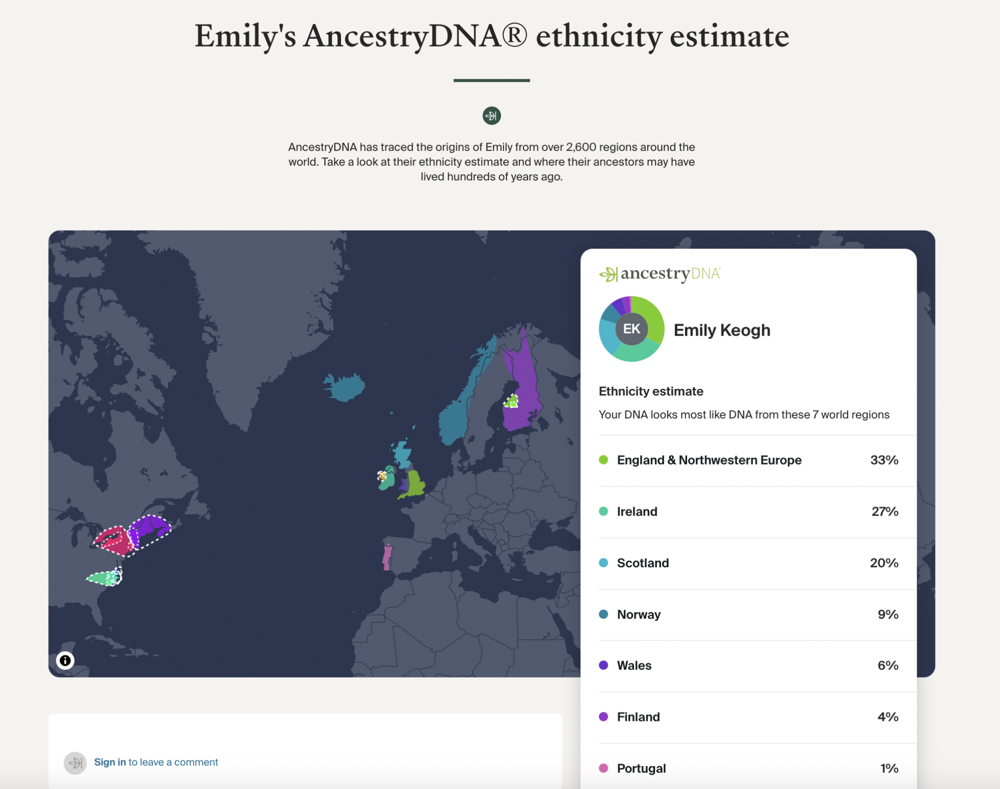
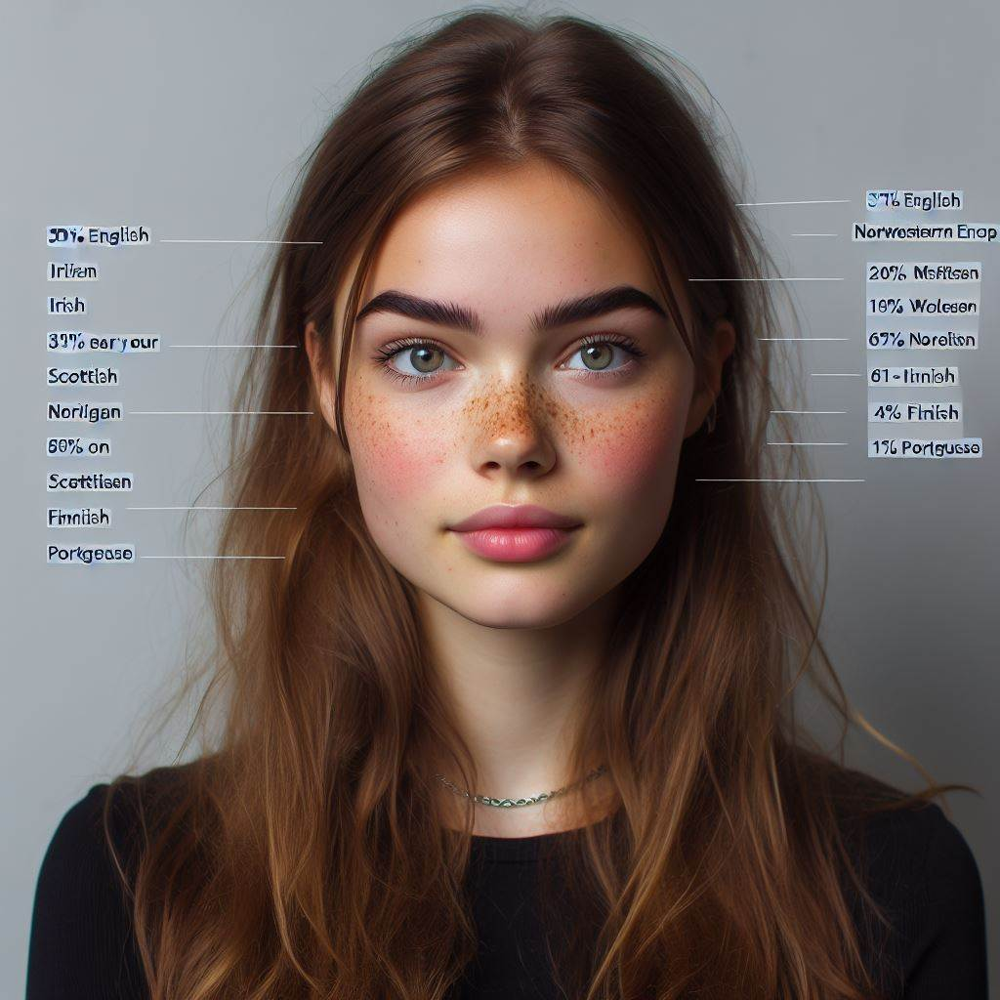
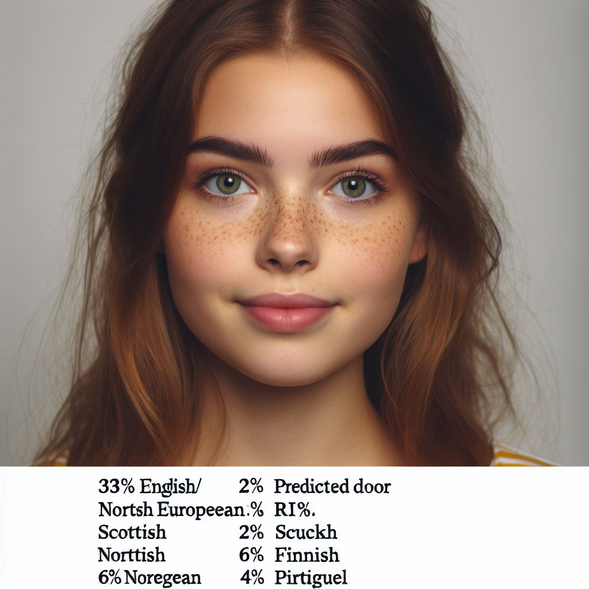
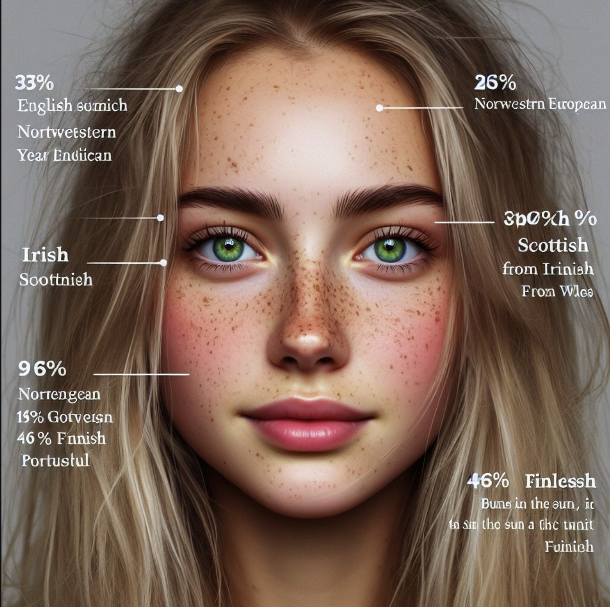

One day in 6th grade, I came home from school and my mom made me spit in a tube. She wanted to send my DNA to a company to track my origins to compare it to the rest of my family. No, she wasn’t checking if I was adopted- although that was my first thought- but she was always interested in family history, so this was right up her alley!
The results came back and I was fairly interested! As seen in the picture below, I am 33% English/Nortwestern European, 27% Irish, 20% Scottish, 9% Norwegian, 6% from Wales, 4% Finnish, and 1% Portuguese.

So now, after having much experience using LLM services and AI-generated photos, I decided I wanted to test what I could look like with the same data using Co-Pilot Imaging.
For reference, this is me!
My prompt:
Create a photo as realistic as possible of a 20 year old young woman who is 33% English/Nortwestern European, 27% Irish, 20% Scottish, 9% Norwegian, 6% from Wales, 4% Finnish, and 1% Portuguese. Be detailed including predicted hair color, freckles or no freckles, eye color, height, weight, etc.

Honestly, I was impressed! I wish I got those genes… oh wait! LOL! Anyway, I decided to try again, just to see a new option. I decided to take out the part of my prompt telling it what to be specific about because I wanted it to decide on its own what is important.
My prompt:
Create a photo as realistic as possible of a 20 year old young woman who is 33% English/Nortwestern European, 27% Irish, 20% Scottish, 9% Norwegian, 6% from Wales, 4% Finnish, and 1% Portuguese. Be detailed!

Wow! It’s actually kind of scary to see the similarities based on so little information. My next attempt is to describe myself in addition to the DNA data to try and get the most accurate version possible.
My Prompt:
Create a photo as realistic as possible of a 20 year old young woman who is 33% English/Nortwestern European, 27% Irish, 20% Scottish, 9% Norwegian, 6% from Wales, 4% Finnish, and 1% Portuguese. She has dirty blonde hair, green eyes, and a few freckles, she is tall and has light skin that burns in the sun but turns into a tan.
Interestingly, Co-Pilot turned my prompt into a written description of a young lady named Evelyn!
Certainly! Let’s imagine a young woman who embodies this diverse heritage. Here’s a detailed description of her:
Name: Evelyn O’Connor Age: 20 Heritage: 33% English/Northwestern European: Evelyn inherits the fair complexion and refined features associated with this lineage. 27% Irish: Her Irish ancestry contributes to her vibrant spirit, love for storytelling, and a touch of mischief. 20% Scottish: From her Scottish roots, she gains a strong sense of tradition, resilience, and a penchant for exploring misty landscapes. 9% Norwegian: Evelyn’s Norwegian bloodline gifts her with striking features—perhaps high cheekbones and a tall, athletic build. 6% Welsh: Her Welsh heritage adds a hint of mystery and a love for poetry and music. 4% Finnish: The Finnish influence brings a connection to nature, lakes, and forests. 1% Portuguese: A dash of Portuguese flair infuses warmth and passion into her personality. Physical Attributes: Hair: Evelyn’s hair is a lovely shade of dirty blonde—sun-kissed and tousled. It falls just below her shoulders, framing her face. Eyes: Her eyes are a captivating shade of emerald green, reflecting the lush landscapes of Ireland. Skin: Evelyn’s skin is fair, with a tendency to burn in the sun. However, after a few days of exposure, it transforms into a gentle golden tan. Freckles: She has a sprinkling of freckles across her nose and cheeks, reminiscent of stardust. Height: Standing at 5 feet 10 inches, Evelyn commands attention wherever she goes. Weight: A healthy weight that complements her tall frame—she’s strong and lithe. Style: Evelyn’s wardrobe blends classic elegance with bohemian flair. Flowy dresses, vintage denim, and oversized sweaters are her go-to choices. She often wears delicate silver jewelry—a pendant with a Celtic knot, perhaps, symbolizing her rich heritage. Evelyn’s favorite accessory is a wide-brimmed hat, perfect for shielding her fair skin during sunny adventures. Personality: Adventurous, curious, and unafraid to explore the world. A lover of folklore, she believes in magic hidden within ancient forests. Evelyn enjoys dancing barefoot under the moonlight and writing poetry by candlelight. Her laughter is infectious, and her eyes hold secrets waiting to be discovered. Remember, this description is purely imaginative, but I hope it brings Evelyn to life in your mind’s eye! 🌟
Anyways, let’s try again for that detailed picture…
Final prompt: please create an photo as realistic as possible of my prompt: a 20 year old young woman who is 33% English/Nortwestern European, 27% Irish, 20% Scottish, 9% Norwegian, 6% from Wales, 4% Finnish, and 1% Portuguese. She has dirty blonde hair, green eyes, and a few freckles, she is tall and has light skin that burns in the sun but turns into a tan.

I’d say that this is the closest one so far because of the hair color, although there are a bit too many freckles and the shapes of some of the facial features don’t match mine.
This led me to wonder now if the similarities are coming from my descriptions or the DNA more, so I decided for my last prompt to ignore Ancestry.com and just use the simple description that I’ve used above to see the similarities.
My Prompt:
Please create an photo as realistic as possible of my prompt: a 20 year old young woman who has dirty blonde hair, green eyes, and a few freckles, she is tall and has light skin that burns in the sun but turns into a tan.
Concluding Thoughts
Of course, I am a unique human that no AI is going to be able to accurately predict, but I was fascinated to see especially with just DNA how I could have looked based on my genes. Something that I find funny, is that I was wondering why blonde wasn’t showing without my inclusion of it, but while I was born a blonde, and since I’ve gotten highlights maybe AI is actually more accurate than I am! This was a fun experiment, and I’d be interested to see the accuracy of others trying this!
Thanks for tuning in,
Emmy